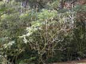
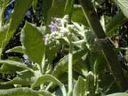
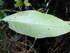
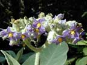
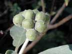
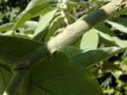

Woolly nightshade
Solanum mauritianum (previously S. auriculatum)
Other names
white edged nightshade, flannel leaf, kerosene plant, wild tobacco tree
Description
Shrub or small tree that may reach 10 metres. The stems are wooly. The leaves are ovate to elliptical to 40 cm long. The flowers are about 10 mm in diameter and usually are blue but white flowers may be found. The plant produces a haired yellow globular berry about 10 mm in diameter.
Similar plants
None. Other nightshades have similar flowers.
Distribution
Found in waste areas of the North Island and northern parts of the South Island.
Toxin
Glycoalkaloids solasonine and solamargine are found in the leaves and green fruit. The ripe fruit contains smaller concentrations of solasonine. The berries have been reported to be toxic to humans but not poultry. Only one suspected case of woolly nightshade poisoning has been reported in NZ
Species affected
livestock and man.
Clinical signs acute
Vary from gastrointestinal disturbances including diarrhoea and constipation to nervous signs of drowsiness and paralysis. In cattle the following have been reported: staggers and delirium as well as periodic convulsions. Clinical signs reported in sheep include rapid respiration, weak pulse, increased temperature, dilated pupils, diarrhoea, staggering and falling before death.
Clinical signs chronic
Post mortem signs
Dark, tarry blood, contracted ventricles of the heart.
Diagnosis
Based on finding evidence of ingestion and clinical signs.
Differential diagnosis
Treatment
No specific treatment; symptomatic care. Establish respiration, induce vomiting (when appropriate), activated charcoal, saline cathartic, iv fluids to maintain body fluid and electrolyte balance.
Prognosis
Prevention
Avoid grazing hungry animals where the plants are growing.
References
Conner H.E. The Poisonous Plants In New Zealand. 1992. GP Publications Ltd, Wellington
Cooper M R, Johnson A W. Poisonous Plants and Fungi in Britan: Animals and Human Poisoning. Her Majesty’s Stationary Office. London. 1998
Parton K, Bruere A.N. and Chambers J.P. Veterinary Clinical Toxicology, 2nd ed. 2001. Veterinary Continuing Education Publication No. 208
 plant |
 |
|
|
 |
 |
|
|
 |
 woolly stems |
|
|
|
|
|